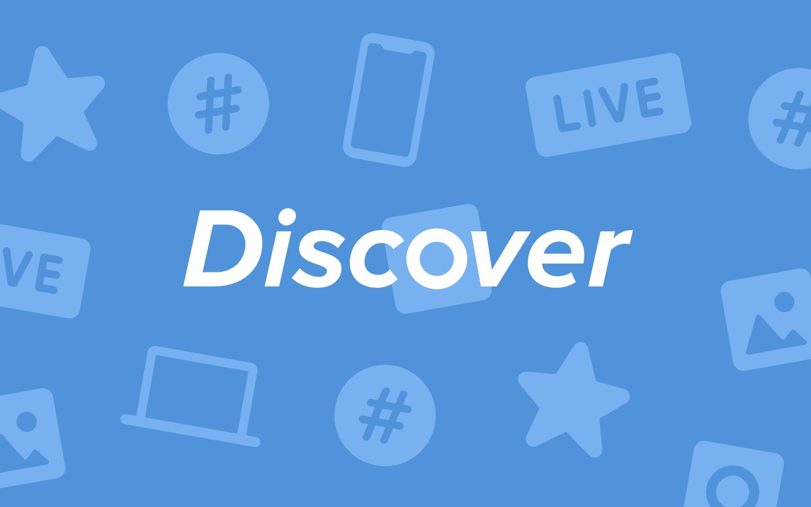

Задача — придумать и нарисовать интерфейс раздела Discover для сайта и мобильных приложений Android и iOS. Раздел Discover должен содержать следующий контент: популярные истории, интересные трансляции рядом с Вами, топ хэштегов и рекомендации фотографий, видео и записей. Оформление контента остается на усмотрение участников, но должно быть одинаковым на всех платформах. Поставленную задачу нужно решить сразу для трех платформ — Android, iOS и полной версии сайта. Победитель получит iPhone 7 Plus и фирменные призы от ВКонтакте. Окончание приема работ — 18 июня 2017 года в 23:59 МСК. Готовые макеты необходимо отправить в качестве документов, прикрепленных к сообщению сообществу VK Designers. Разрешение макетов — 720×1280px или 1080×1920px для Android, 640×1136px или 750х1334px для iOS и страница шириной 1280px для Web. Формат макетов — PNG.
